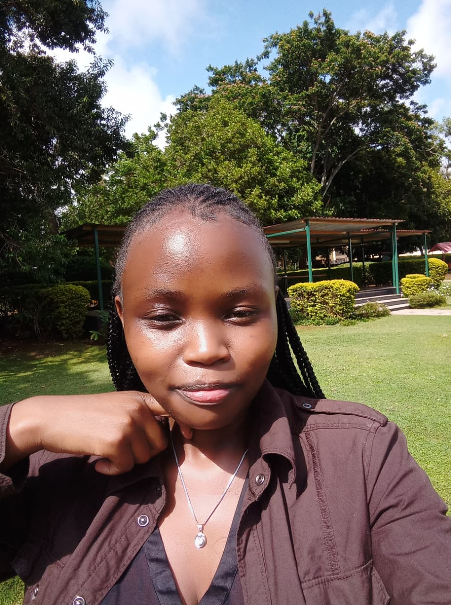

Hi, I'm Faith — a Computer Science student at Kirinyaga University with a strong passion for full stack development, networking, and system design. I thrive on learning through building, tackling complex technical challenges, and exploring how diverse systems integrate and operate seamlessly.

A student developer focused on growth, practical learning, and building real technical skills.
I'm Faith Cheptoo, a Computer Science student with a growing passion for software systems, networking, and web development. I enjoy exploring how technology works and using that knowledge to create useful and practical solutions.
Through my coursework and industrial attachment experience, I've gained exposure to network configuration, database management, troubleshooting, and system analysis. I'm still learning, but I'm committed to improving my skills consistently through hands-on practice.
I value curiosity, adaptability, and continuous learning. Whether I'm building a small web project, designing a database, or configuring a network, I approach every task with patience and a willingness to grow.
Technical skills and tools I've explored through coursework, personal projects, and attachment experience.
Small but genuine projects that reflect my learning journey and technical interests.
Designed and built a personal portfolio website using HTML and CSS to showcase my background, skills, and projects. Focused on clean layout, responsiveness, and improving my front-end development skills.
Designed and simulated a local area network using Cisco Packet Tracer. Configured routers and switches, assigned IP addresses, and tested communication between devices.
My academic journey and technical foundation.
Kirinyaga University · Kenya
Kenya
I'm currently looking for opportunities and environments where I can continue learning, contribute to real projects, and grow as a developer.
I’m approaching the completion of my undergraduate studies, and I’ve built a disciplined, curious, and resilient approach to learning. I adapt quickly, grasp new concepts with ease, and genuinely enjoy sharpening my skills through practical problem‑solving and continuous growth.